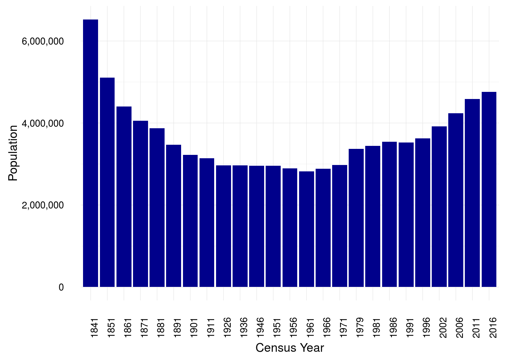

CSO have an API for access to data on demographics and the economy in the Statbank database.
The data is made available in JSON-stat format. There is an R package called rjstat , developed by Aaron Schumacher to read and write data in this format.
install.packages("rjstat")
library(rjstat)
library(tidyverse)The website for the API is here.
The JSON data is stored in a url comprising a fixed address plus the table code. So this table would be available here for the table “Population at Each Census from 1841 to 2016 by County, Sex and Census Year” which has the code EY001.
Use the function fromJSONstat() to read in the JSON data as a list
census_url <- "http://www.cso.ie/StatbankServices/StatbankServices.svc/jsonservice/responseinstance/EY001"
table <- fromJSONstat(census_url)Convert the list into a tibble() using as_data_frame()
table <- table[[1]] %>%
as_data_frame()
table## # A tibble: 2,025 × 5
## County Sex `Census Year`
## <chr> <chr> <chr>
## 1 State Both sexes 1841
## 2 State Both sexes 1851
## 3 State Both sexes 1861
## 4 State Both sexes 1871
## 5 State Both sexes 1881
## 6 State Both sexes 1891
## 7 State Both sexes 1901
## 8 State Both sexes 1911
## 9 State Both sexes 1926
## 10 State Both sexes 1936
## # ... with 2,015 more rows, and 2 more variables: Statistic <chr>,
## # value <int>Use ggplot() to visualise, e.g. total national population for every Census Year between 1841 and 2016.
table %>%
filter(Sex == "Both sexes",
County == "State") %>%
ggplot(aes(x = `Census Year`, y = value)) +
geom_bar(stat = "identity", fill = "dark blue") +
theme_minimal() +
theme(axis.text.x = element_text(angle = 90, hjust = 1)) +
scale_y_continuous(labels = scales::comma) +
ylab("Population")